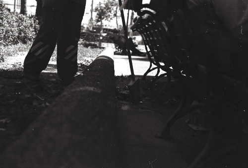
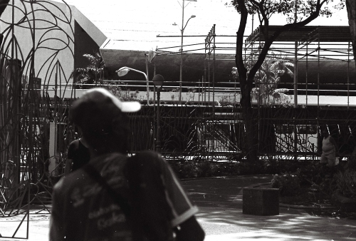
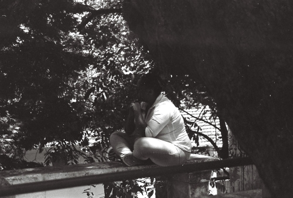

QUEM DISSE QUE O BAIANO É PREGUIÇOSO?
Sobre o trabalho
O trabalho “Quem disse que o baiano é preguiçoso?” surgiu da imagem que desde criança eu via na TV, do baiano ser retratado da forma mais incoerente possível, como se fosse um povo preguiçoso, acomodado e que vivesse de dormir na rede, beber água de côco, comer acarajé e falasse tão devagar quanto possível para não “cansar a voz”.
Esse retrato bastante caricato do baiano nem sequer era semelhante ao meu ambiente familiar, onde via meus pais acordarem de madrugada para trabalhar e só voltar após as 22h, para no próximo dia repetir o ciclo, o que de jeito maneira fazia dos dois preguiçosos.
Ao passar dos anos, conhecendo um pouco melhor realidade da cidade de Salvador e outras cidades do interior do estado, ficava mais nítido o quanto o baiano é um povo guerreiro em suas batalhas, desde a batalha pela busca de emprego entre os cerca de 278 mil desempregados na capital (de acordo com dados do IBGE, Salvador está na posição 8 das capitais com maior índice de desemprego, com taxa de 16,1%) e 464 mil no estado, ao trabalho informal como forma de sustento de muitos até a preservação dos empregos formais.
Este trabalho vem timidamente celebrar as pessoas que acordam antes do sol nascer, que se espremem nos meios de transporte a caminho do trabalho e literalmente lutam para garantir seu sustento, construindo a cidade de Salvador e o estado da Bahia. Concluindo, essas são as pessoas que motivaram o conceito deste trabalho, que teve como resultado a experiência de poder conhecer, mesmo que por pouco tempo, o cotidiano e o trabalho de algumas destas e seus esforços para ali estarem e registrá-las exercendo suas funções.
Para tornar este trabalho possível, foi utilizado o espaço da disciplina “Fotografia 1-A”, código EBA153, da Escola de Belas da Universidade Federal da Bahia (EBA - UFBA), ministrada pela professora Renata Voss, no semestre de 2017.2. O trabalho aqui apresentado foi realizado pelo aluno Raone Arlei Argolo da Silva e foram utilizados uma câmera Nikon com lente 18mm-55mm f/3.5-5.6 e filme monocromático ISO 400 35mm. Após o negativo revelados, as fotos foram digitalizadas para serem aqui apresentadas.
FOTOGRAFIAS
Este foi o resultado do trabalho prático.
Clique nas imagens para aumentá-las e conferir seus dados técnicos
f/5.6">
f/16">
f/5.6">
f/5.6">
f/5.6">
f/5.6">
f/5.6">